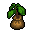

Tree apple seedling
| This article is a stub. You can help Graveyard Keeper Wiki by expanding it. |
| Tree apple seedling | |
|---|---|
 | |
General Information
| |
Type :
|
Seedling |
Base Cost :
|
|
Source(s)
| |
Buy from :
|
Clotho (T I) |
Sell to :
|
Clotho (T I) |
| None | |
Study Information
| |
Study reward:
|
None |
Technical Information
| |
Internal name:
|
seedling_tree_apple |

Sold by the witch Clotho in the west swamp. Seedlings can be planted in the garden south of the player's home, also referred to as the Orchard.

Crafting
| Place for the apple tree | |
|---|---|
| Produced item | Materials required |
| Apple |
1× Tree apple seedling |
| |||||||||||||||||